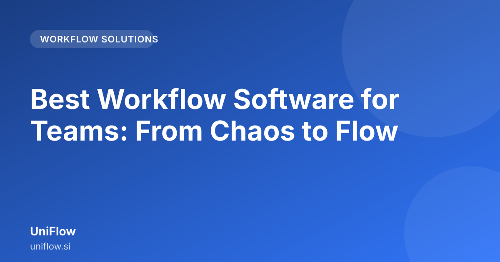

Best Workflow Software for Teams: From Chaos to Flow

Finding the best workflow software for teams is often presented as a feature comparison, but for operations managers, the real question is: how will this tool make our daily work flow better? This guide moves beyond checklists to show how integrated process management solves the friction points that slow down modern teams.
What is the real cost of process chaos in team operations?
When processes are not clearly defined or are spread across multiple tools, your team does not just become disorganized—it becomes actively inefficient. This chaos has tangible costs for any organization, especially in fast-paced environments.
The Hidden Drain on Time and Focus
Consider a team handling client onboarding. The process might involve:
- Sales filling out a form.
- Handoff to finance for initial checks (via email).
- HR needing to create an employee profile (in a separate HR system).
- IT setting up hardware (via a ticketing system).
If these steps are disconnected, the team spends hours trying to figure out "who does what next." This constant context switching is a massive drain. Instead of focusing on high-value tasks, team members spend their day chasing updates, sending follow-up emails, and manually updating spreadsheets.
The Cost of Missed Approvals
In operations, a delayed approval can mean a stalled project, a missed deadline, or a compliance risk. If an expense report needs multiple manager sign-offs, and the system relies on everyone checking their inbox, that report might sit for days. Delays in critical processes can lead to missed opportunities or strained business relationships.
Operational Friction vs. Feature Count
Many tools promise automation. However, if the automation just moves data from one silo to another without enforcing the correct sequence or logic, the problem is not solved. The cost of chaos is not just wasted time; it is wasted trust in internal systems and a measurable dip in team productivity.
How should an operations manager evaluate workflow software beyond feature checklists?
As an operations manager, your job is to design systems, not just manage tasks. Therefore, when evaluating any potential workflow solution, you must look for how the software supports the flow of work, not just the existence of tasks.
Focus on Process Mapping First
Before looking at integrations or automation triggers, map your most painful process on paper. Identify the start point, every decision point (the "if/then" logic), every required approval, and the final outcome. Once you have this map, evaluate software based on its ability to digitally replicate that map accurately.
Ask these questions:
- Can the tool handle conditional routing? (e.g., If the invoice amount exceeds a certain threshold, it must go to the CFO; otherwise, it goes to the Department Head.)
- Does it allow you to visualize the entire journey? A simple list of tasks is not a workflow.
- How easily can you change the process once it is running? Processes evolve; the software must be flexible.
Prioritize Visibility Over Volume
A tool that can handle a high volume of tasks is less valuable than a tool that gives you perfect visibility into the status of the most critical tasks. Look for dashboards that show bottlenecks—the places where work is piling up, not just where it is currently sitting. This is key to improving team operations efficiency.
Test the "Human Element"
Workflow software is designed to manage humans. Does it make the human experience better? If the software forces users to navigate complex menus just to approve a simple request, adoption will fail. The best tools feel intuitive, reducing the mental load on your team leads.
Why integrated process management beats siloed tools for team efficiency?
This is where most companies struggle. They buy a dedicated CRM, a separate HR portal, a project management tool, and a separate approval tool. They then spend more time integrating these tools than they spend running the business.
The Death of the Handoff
In a siloed environment, every time a task moves from one tool to another, a "handoff" occurs. A handoff is a point of failure. Data might be manually copied, context might be lost, or the next person might not receive the notification at the right time.
Integrated process management ensures that when a CRM updates a client status, the project management tool is automatically notified, and the correct task is generated for the operations team, all within one unified view.
Creating a Single Source of Truth
When everything lives in one place, there is no debate over "what the status is." If the workflow shows the document is in "Legal Review," everyone knows that. They do not have to check the shared drive, then check the email thread, and then check the ticketing system. This single source of truth is fundamental to achieving true process automation for teams.
How does a unified platform handle complex approvals and process automation?
Complex business processes are rarely linear. They involve loops, exceptions, and multiple stakeholders with different levels of authority. A good approvals software for managers needs to handle this complexity gracefully.
Conditional Logic is Your Best Friend
Simple workflows are easy: A $\rightarrow$ B $\rightarrow$ C. Complex workflows look like this:
- Step 1: Submit Request.
- Decision Point: Is the request for a new software license?
- YES: Route to IT Manager for budget check. If budget is approved, route to Security Team.
- NO: Route directly to Department Head for approval.
- Loop: If the Department Head rejects it, it loops back to the Requester with mandatory feedback.
A unified platform allows you to build this logic visually, rather than writing complex code or managing a dozen separate email chains.
Automating the Mundane
Process automation is not about making things faster; it is about making them unattended. It handles the repetitive, low-value steps so your team can focus on the high-value, strategic decisions.
For example, instead of a team lead manually sending a reminder every two days to the finance department about an outstanding invoice approval, the system automatically sends a polite, escalating reminder based on the defined Service Level Agreement (SLA) within the workflow. This is core to achieving workflow management best practices.
If you are looking for a platform that handles these complex routing and automation needs without requiring a dedicated developer to build it, you might want to look at UniFlow.
How to choose the right workflow solution for scalable team operations?
Scalability means the system can handle 10 processes today and 100 processes next year without breaking or requiring a complete overhaul.
The Checklist for Scalability
Use this simple checklist when comparing vendors:
| Evaluation Criterion | What to Look For | Why It Matters for Growth |
|---|---|---|
| Customization Depth | Ability to add custom fields and unique branching logic. | Ensures the tool can adapt to your unique business rules as you grow. |
| Integration Ecosystem | Pre-built connectors for common tools (Slack, Google Workspace, etc.). | Prevents you from having to build every single connection from scratch. |
| Audit Trail | Automatic logging of every change, approval time, and user action. | Essential for compliance and for understanding where processes break down over time. |
| User Experience (UX) | Intuitive interface for both the process owner and the end-user. | If the tool is hard to use, your team will bypass it, defeating the purpose. |
Start Small, Think Big
Do not try to automate your entire company on day one. Identify one high-friction, repeatable process—like vendor onboarding or internal leave requests—and implement the solution there. Measure the time saved and the reduction in manual follow-ups. Once you prove the value on a small scale, you have the internal case needed to scale the solution across other departments.
Further reading across our network: Shiva Agents · Website Management Dashboard
Conclusion
Choosing the best workflow software for teams is not about selecting a tool with the most bells and whistles. It is about finding the platform that acts as the connective tissue for your operations. It must enforce structure, eliminate the friction caused by manual handoffs, and provide crystal-clear visibility into every step of your business logic. By focusing on integrated process management, you move your team from reacting to chaos to proactively driving flow.
Frequently asked questions
How can workflow software specifically reduce approval bottlenecks?
Effective workflow software enforces clear routing, sets defined SLAs for each step, and provides real-time visibility into where a process is stalled, allowing managers to intervene proactively.
What is the real cost of process chaos in teams?
Process chaos leads to tangible costs, primarily wasted time and focus as teams context-switch between disconnected tools. Delayed approvals and manual tracking directly reduce productivity and increase risk.